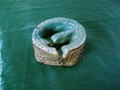
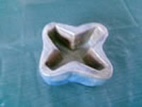
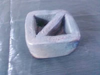
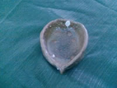
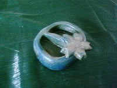
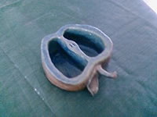
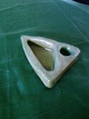
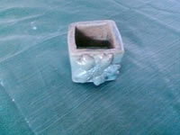
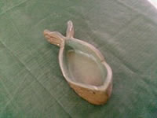

鶯歌一日遊學2010第一期學員心得 |
|||
弘鶯陶一日遊學心得 陳協昌 這次受廖老師之邀前往參予弘鶯陶試辦會,順便去觀摩許多有關陶瓷創作,量產…等. 第一站,鶯歌火車站集合.. 真不好意思遲到了… 拍個大合照便前往工廠. 第二站石膏工廠,在裡面的師傅都是做1,20年的老師傅,第一次看到用斜口刀割卡榫,也第一次看到石膏可以這麼硬,用木槌敲還會發出像敲金屬的聲音,也第一次看到真空攪拌機如何攪石膏,還有洋干漆顏色真漂亮. 第三站來到了注漿工廠,看見了石膏摩配合骨瓷泥漿所做出的成品,形狀很多樣化,見識到石膏的厲害,也有看到瓦斯窯,和進瓦斯窯前的預備工作是這麼瑣碎複雜又辛苦的. 第四站來到了玩陶的地方,在這裡的員工幾乎都是鶯歌畢業的,感覺特別親切,而且還有摸到土,讓我先體驗到了陶塑的樂趣,今天做了一個壽桃狀的碟子,摸到土真的很好玩,再來就是拍照,吃飯. 第五站是印刷花紙的工廠,老闆年輕有為,第一次了解到原來瓷器上的畫不一定是純手工,也可以用貼花紙來印上去,也看到很多的機器,可見是多嚜繁複的步驟才能完成一張張花紙呢!!還看到我覺得最厲害的,加熱水會變色的瓷器,看到時只有嘆為觀止呀!!! 第六站是黏貼花紙的工廠,看見一個個工作人員手如機器一般準確的黏貼花紙上去,在以極快的速度沾水把花紙黏牢,那種動作神情另人著迷呀~ 第七站去鶯歌陶瓷老街尋寶去,要我們找出兩家店,裡面的東西讓我一看再看,真的超喜歡的,可惜經費不足,不然一定買下去,最後的兩個小時,讓我掛了老街好幾趟,內心只有一句話,{陶瓷真的很棒!!} 今天聽到弘鶯陶的信念時,真的很感動,畢竟我是陶工科的學生,對陶瓷當然有一定的興趣在,看有人這麼努力的為陶瓷創作再努力,真的很感動,今天也真的學到很多學校老師沒教的事,也看到了陶瓷創作的樂趣,辛苦的地方,但陶瓷真的是生活必需品呀!!許許多多的東西都要用到他,最後希望這活動可以永續經營下去… 妙法弘鶯陶,善念揚公義(工藝) |
|||
|
鶯歌一日遊 陶三仁 40 黃麗芳 今天很榮幸能夠參予這個遊學活動，既是期待又是開心，接著我們先到第一站-三好製模工廠，一進去有種熟悉又陌生的感覺，因為已經好久沒接觸囉!有些技法可能當下有點稍忘，但是經由師傅解說以及同學的提問下，讓我對製模的過程有著更深的印象，知道一個模一天可以生產一百個需要烘十次!!到了和協陶瓷器公司參觀灌模流程，將製作好的模型內灌漿之後倒出，陰乾之後上釉就可燒了!我發現原來外面的陶瓷是直接上釉燒，而不是向在學校還要一次的素燒，果然我們的技術要再多多加油囉!後來又到了陶驛陶藝公司去實作，老師交了兩種方法:一種是挖空一種是空心，但是內角都必須是直角90度，而也要用特定的工具去完成它，而我就做了一個挖空的!!其實內角90度還蠻困難的喇!!角度要準真的要很小心細心，然後又要把外觀修飾滑面，老師特別提醒不能用手去撥平!!這讓我知道做每個作品都不能這麼隨便方便就好!!然而我也壓了個壓模花做裝飾，小小的DIY真的很有趣哦!!後來到了花紙印刷公司，先了解了圖案先從電腦建圖檔，再去曝光將板子做出來，在加油墨顏料去印刷出，一個顏色印一次!!還看到有立體的哦!很有趣~~記得之前是到合成公司去看是印刷HELLO KITTY的，這次看到了更多的圖案喔!!也了解了更多，也看到一個杯子加了熱水外頭會有變化!!原本普通一色加了熱水就有美麗的圖案囉J這是因為還貼了一曾變化的，這樣看了就好心情哦!!花紙燒製加工場則是將印刷好的紙花貼於陶器上，各個師傅都老手速度很快的樣子!!但是也要夠細心，氣泡要壓出，之後再燒就完成囉就是個美美的陶瓷作品!!鶯歌老街就是最後一站了!!先尋找了兩家店家之後，就逛阿逛，老街上陶瓷的東西真是多到數不清，樣式多到大大小小都有，當然價錢也有高低之分囉!!但是每個陶瓷作品都是個藝術，各個都是個漂亮的陶瓷哦 !!今天很充實，整個陶瓷製作過程都參觀了一變，讓我們更了解了陶瓷，也因中山路上的路燈造型讓我知道了那是鶯歌的指標就是煙囪，真的很有意思!!雖然大致上以往可能就走過些許工廠，了解了些，但是今天的遊學真的太棒了!!很充實，比以往知道的還要更多更扎實了!!而其實陶瓷是一個很重要的藝術作品之一，我相信他會因而發揚至各地，讓大家都懂的陶瓷!!以後人們更是會陶瓷行銷到每個角落!!謝謝今天所帶領我們的大哥大姐：） |
|||
鶯歌一日遊學 曾郁庭 我這次參加鶯歌一日遊學收穫真的很多，學到了許多平常學校沒教到的知識，因為我不是鶯歌人所以很少接觸鶯歌，只知道鶯歌陶瓷很有名，雖然我讀陶工科快兩年了但從未真正仔細逛過鶯歌老街，但藉由這次的鶯歌一日遊學讓我真正的了解當地的特色，我這一路的參觀我有看到某條道路上有個煙囪的設計我覺得還蠻有藝術的，坐在車上真是賞心悅目呢！一開始有去參觀製模工廠，那裡的師傅好厲害，因為我們有石膏模的課而且到時候二下也要考石膏模丙檢，所以有些石膏模的問題，師父們也針對了我們的問題而提出了解答，我原本不知道為什麼我的石膏漿調配出來為甚麼那麼軟，原來是比例的問題，讓我心中的疑惑就此解開了，之後我們還去捏陶實作體驗，很有趣，因為我們上學期是上拉坏的課程，下學期才是捏陶土的課程，所以這個體驗讓我提早接觸了捏土的課程，但其實還蠻好玩的，因為可以捏出自己所設計的作品，之後還有去參觀花紙製作工廠，才發現原來我們平常用的馬克杯上面的圖案就是靠這樣的方法所壓印上去的，而且老闆還給我們看未上市的來一客的設計正在印刷中呢，最後還去陶瓷老街領到了店家的杯墊之後我們就在鶯歌老街走走逛逛，我買了幾個杯子，才發現鶯歌陶瓷果真不是浪得虛名的，因為杯子和磁器都好有設計感喔，就連天橋都好有藝術設計感，鶯歌這個地方到處都可看見藝術的存在，這趟鶯歌一日遊學之旅，讓我玩得很開心、知識的收穫也不少。 |
|||
弘鶯陶實習報告 鶯歌高職 陶工科 二年級 仁班 廖仲文同學 今天早上,雖然飄著綿綿細雨,一行人,就從火車站出發了! 第一站:製模工廠(三好製模社) 一進去,看見一位20幾年經驗的師傅在刻卡榫,而且還站著刻,刻得又那麼正,我們在學校,坐著刻還刻得不是很好,果然厲害 接下來看了製造原模的過程,得到了一個結論:在工廠裡是用真空攪拌機攪拌石膏,而我們在學校是用手攪拌,所以石膏模的堅固性沒那麼好,比較容易壞掉 第二站:和協陶瓷公司 看到注漿的過程,把邊緣用海綿修平整,陶器先上一層透明釉再拿去燒,最特別的是,上釉時,還用一顆汽球堵住陶瓷品,使釉不會流進去,這真是有想法!!! 第三站:陶驛陶藝公司 在那裡有實作課程,主題是要用陶土,捏成小碟子,先讓我們參觀一下讓我們有些靈感,我走來走去……看到水缸裡面有小魚游來游去,就決定做魚,做完之後,刻上名子,拍照以示負責 做完大家肚子也都餓了…中餐時間 第四站:弘鶯陶創意執行發展中心 看到了許多作品,也介紹了這次活動的幾位理事長 在那裡頒發了捏陶優勝,就是我阿…薰香的夜燈,還問了一個問題:路上經過中央分隔島上,燈柱下的造型是什麼?因為我住鶯歌所以我知道,是煙囪 第五,六站:花紙製作廠(福興榮轉寫印刷公司)花紙燒製加工廠(振弘加工廠) 看到有種最新的花紙,燒製完成後,加熱水竟然會把圖案呈現出來,加冷水就變回原本的藍色,這個技術真是新奇 整個花紙製作過程,都瀰漫著一股化學的氣味,做出來的東西,色彩繽紛 最後一站:陶瓷老街 因為我住鶯歌,所以鶯歌陶瓷老街已經逛到如走廚房一樣了,先去找2個店家,得到了2個特別的杯墊 接下來就逛老街…… 逛完,大最後再拍個團體照 在鶯歌火車站解散了 |
|||
鶯歌一日遊學 林庭安 一趟鶯歌一日遊學之旅讓我獲益良多,學到許多學校沒教得事,看到許多業界的製做流程,不是平常可見識到的。 在製模工廠裡看到師父們製模.灌模.上釉和排窯;在陶藝教室裡學到更多不同工具的使用用法;在花紙製作廠發現原來馬克杯上的圖案都是這樣完成的;在陶瓷老街映入眼簾的全是古色古香的建築美景。 雖然說平常在學校捏土.玩土都是家常便飯,但是來到陶驛教室捏陶就是有另一種收穫,在短短的一小時中只用了兩塊土捏出創意,使用了很多平常在學校裡不會用的工具,我所學到的.所收穫的,全都在這個手捏作品中一一呈現。 讓我最大開眼界的是參觀花紙製作.燒製加工廠,運用了電腦繪圖把客戶想要的圖案畫出來,再由師傅一步步的操作機器印出圖案,按照著形.色.質的概念做出每一個讓客戶滿意的圖案,讓我多見識了一種新的操作流程,多了一點對這方面的了解,讓我對未來設計製做多了一種選擇。 謝謝弘鶯陶創意執行發展中心和鶯歌鎮青少年關懷發展協會所舉辦這個活動,雖然說家住在外縣市,但是因為有了這個活動,讓我更了解鶯歌.更了解陶瓷,也因為就讀鶯歌高職,鶯歌已經是我第二個家,我也是鶯歌的孩子,我很樂意.很開心可以參與這一次的一日遊學活動。 |
|||
鶯歌一日遊學 莊翔云 這次一日遊鶯歌的活動透過實際參觀工廠來學習，從製模工廠到花紙的製作、燒製與參觀鶯歌老街，一些平常在學校裡無法學習到的例如像是碗狀的容器沾釉藥時為了避免釉藥殘留在裡面所以師父就用氣球輕輕壓在容器口使釉藥不會滲入，花紙製作工廠裡的花紙有的還有神奇的變色效果，用不同溫度的水讓馬克杯上的花紙變色，原來花紙的製作並不是我想像的那麼簡單而是一層一層，一個顏色一個顏色慢慢上上去的等等。 到了鶯歌老街我們參觀了好多陶瓷工藝品，其中有一家店裡面的陶瓷品全都是他們自己設計的，有的樸素有的精緻，裡面的擺設和裝潢很復古就好像回到老家的感覺。這次的走訪除了參觀之外還可以和師傅檢討在學校製作石膏模時的缺點，利用這樣的機會充實自己就好像我們比其他同學多上了一堂課一樣。 |
|||
鶯歌一日遊學 林怡婷 充實的一天，早上9點集合，聽說這次人小多一點。 先到擁有二十多年經驗師傅的製模工廠，因為我們曾經考過石膏模丙檢，所以這對我們並不陌生。 然後到三好製模社，雖然我也做過注漿的作業，但看到各位師傅熟練的手法和速度，實在令我甘拜下風。 中午我們到陶驛陶藝吃午餐，先到後院徒手做了一件小作品，時間其實有點趕，不過還是做完了，之後就慢慢享受午餐囉! 然後到花紙製作廠，，只見師傅親切的帶著我們到處參觀，才知道光一個圖案，就要重複不下十次的動作，一直不停的重複印刷，最後還看到了會變色的馬克杯，看到那我真的要說，人類果然是世界上最聰明的。 之後我們又到花紙的加工廠參觀，想不到燒的這麼快前面才放進去，後面就出來燒好了，這看似簡單，其中可不知經過了多少失敗了。 沿路上看見路間的路燈，平常也沒怎麼注意它，後來才知道，原來那是四角燒窯的模型，然後到了老街，我們開始了最後一個行程，也就是尋寶，平常逛到不知道要逛什麼的老街，想不到因為尋寶活動讓我走遍了以前沒發現過的店家。 吸收了一天的知識，讓我發現，鶯歌可真是個寶地阿，在你未發現的小巷中，可能就有令人意想不到知識在裡頭，經過了一天，相信大家也都對彼此更熟悉了，這趟旅程可真是滿載而歸阿。 |
|||
鶯歌一日遊學心得報告 陳筱蟬 這次的鶯歌一日遊學，學到蠻多東西的。一開始參觀石膏模的工廠，二年級時學的技巧很多都忘光了，這次看到師傅們的功夫，就覺得以前學的只是冰山一角罷了。後來在印花紙工廠的時候，聞到熟悉的味道，就想起以前爸爸負責出版，媽媽負責畫稿，小時候還小，對這行是一知半解，而藉由這次的參觀，有機會可以看到他們實際在操作的樣子，對出版的瞭解就更多了。而且還看到很不一樣的杯子，倒熱水時圖案就顯現出來，倒冷水之後就變回一個普通的杯子。雖然老闆有解釋怎麼製作的，但還是聽不太懂，還是在一旁欣賞杯子比較實在。之後參觀燒花紙的工廠，還蠻佩服那些阿姨們，每個人的動作都很熟練，怎麼貼的都看不清楚，一下子就把花紙貼上去了，還貼的很整齊、很漂亮，想必是練了很久才有這樣的功夫吧！這次鶯歌一日遊雖然走的還蠻累的，但是學到很多平常不知道的知識，以後會不會碰到這一行也不知道，但是我知道今天的收穫對我來說是很重要的，也很謝謝那些在後面支援幫助我們遊學順利完成的大哥大姊們，辛苦你們了！ |
|||
鶯歌一日遊學心得報告 鄭鎧筠 這次參加弘鷹陶的活動，看到平常沒有機會看得到公廠內容，這一次真的很幸運能夠參觀這麼多的工廠，知道了製作過程和一些我不知道的事，像是花紙。這次活動我覺得很有趣，尤其是花紙燒製的參觀，讓我感到很神奇，原來花紙是這麼來的阿! 製作過程意外的很複雜。製模工廠的師父真的很厲害，因為我們將要考檢定，能夠看到這些真的很開心，除了能夠了解製模的過程外，剛好對我們的檢定也很又幫助，一舉兩得! 因為本身就是陶工科的，對於這些多少知道一些，所以參觀的過程中聽解說就比較不會聽不懂的情況發生。 這一次的活動真的得到了很多的體驗和經驗，不過因為我們這一團是試辦團，所以過程中我覺得講解的部份可以再多一點和仔細一點，畢竟這次因為學生都是陶工科的，一些基本的都還算懂，所以我覺得這部份還可以改進。 這個活動辦的很有教育意義，希望弘鷹陶能夠發揚廣大! |
|||
弘鶯陶鶯歌遊學陶三仁 12 黃瑞峰 第一站我們參觀製模工廠(三好製模社)，石膏模對我來說不太陌生，二年級時因為考石膏模丙級考試，學習了一整年的課程，也向師傅討論出問題的所在，石膏模會裂，是因為有可能我們是用手攪拌，模子裡面可能會有許多小針孔，而導致出現裂痕。 參觀陶瓷的灌模製造流程(何協陶瓷器公司)，看如何注漿，和如何排窯，排窯要從上面排到下面，才不會有髒東西掉到裡面而影響作品。 在陶驛陶藝公司，製作屬實自己的小碟子，之後參觀了花紙燒製跟花紙製作，和老街參訪與遊賞，在這之中，學習到了不少的東西，也讓我更加了解”鶯歌陶瓷”，參加弘鶯陶這個活動，學習到很多知識，也讓我更了解製作陶瓷有許多的小技巧，希望下次還有這個活動可以參加。 |
|||
鶯歌一日遊學心得報告－林郁銘 在這次的遊學當中，讓我更認識陶瓷的作法，從我最熟悉的石膏模說起，第一站-石膏模製工廠，我看到了熟悉的石膏，看到了熟悉的步驟，看到師傅俐落的手法，果然是歲月所磨練出來的手藝，下刀不猶豫，且精準快速，母模開出之後，下一步就要開模了，開模才是最重要的，在開模時，要注意很多，第一石膏漿的調配，第二打漿的時間，第三開模的技術，這些步驟，都會影響後來注漿的使用次數，在第一站我學到了3個大重點。 如下： 第一點-石膏調配其實只要1:1.1就行了。 第二點-就跟我們學校不同的地方，人他工廠可是用真空打漿機打出來的，難怪石膏模那麼堅不可摧，這就是一個模可以用到100多次還不會裂的秘訣。 第三點-做出來的工作模，要把它五花大綁，這樣它才不會變形。 結合以上幾點，你以為就做的出來了嗎?錯、錯、錯！ 最後一步，要灌出一個母模，來驗證你開出來的工作模是不是夠優，假如有缺失就要進行修正，這樣才會做出好模來。 第二站-注漿工廠，什麼叫氣派看這個，一進門，眼前是3大排的石膏，其中兩排在倒漿，為什麼要倒漿呢？就是把石膏吸收所剩的漿給到出來，之後等乾，讓注漿胚稍微乾一點，就能分模了，分出來之後，就放置在一旁陰乾，過幾2天就可以拿來細修，做最後修整，這時就能看出來注漿時石膏有沒有瑕疵了，有瑕疵分模線的部份就會變大，這可是我這次遊學所學到的經驗喔！之後就要上又了，咦？！是不是少一個步驟，是陶工科的人都應該知道，還沒素燒啊！錯了！！他們這個可是直接上釉喔！而且擦胚底的海綿可是高級海綿喔！擦一次就好了，之後就擺進窯裡就ok了，窯的大小，就跟我們學校一模一樣大喔，燒瓦斯窯1200度，燒出後，是不是還少了一些圖案呢？在下下站就要帶我們到花紙工廠來一探究盡。 第三站-陶藝，來到了這裡時，我看看手錶，11點多，我以為要吃飯了，結果要來捏陶，還要捏一個盤子，心裡想，是等等要給我們裝食物的嘛？那我要做最大，結果不是，這是個比賽，比賽！那我一定要最快完成！因為我想要吃飯，那位大姐姐還介紹了工具的用法，我的 天ㄚ！太仔細了吧！來看看我做的成品吧！果然是第一個做好的，能說什麼呢！加入陶工科吧！！做好，就跟作品拍張照，就去吃飯了，果然腦力激盪後的飯最好吃了，休息吃飽後，接著下午的行程， 第四站-紙花工廠，這個也是製作陶瓷的一環喔！你以為商店的瓷盤瓷杯都是用畫的嗎？那要多少人去畫啊？當然是用紙花貼上去的，方便且快速，但是那個製作的房間的味道，真的不是一般人可以待的，味道簡直是太不好聞了，但是這卻是紙花最重要的部分喔！成敗都在這，弄得好，後面就很順利，弄不好就要重來，之後就開始配色了，那些顏色有些可是有毒的喔！而這卻是老闆的獨門功夫，想學！除非當他的兒子，下輩子吧！當他家族一員，就有可能學的到喔！之後調好色，就開始用機器上工了，紙花的材料就好了喔！你以為這樣就好了嗎？錯！還要把花紙黏上去才是技術，很神奇的是花紙水後，會浮開，就可以移到我們要的花瓶上了喔！接下來就是燒電窯，150度的長窯，燒製出來後，再細修底部，拋光就可以上市了。 第五站-鶯歌老街，走在老街上，雖然老街失去了以前的感覺，破舊以及古老，但是卻增加了一些新朝感，讓人不會覺得古老與破舊，這也是老街隨者時代所變化而成的新風貌，也讓陶瓷能隨著時代所變化，行銷全世界。 |
|||
| 學員作品 | |||
|  |  |  |  |
|  |  |  |  |
|  | |||